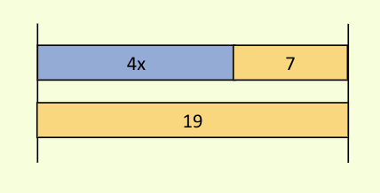
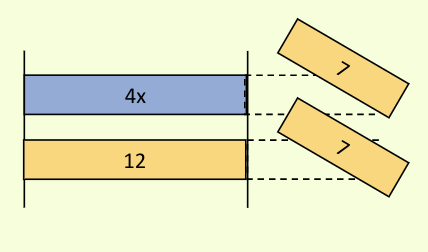

Page 1
Here is an example of a problem a student is trying to solve.
4x + 7 = 19
First, they did this CORRECT step.
4x + 7 - 7 = 19 - 7
What step did they do?

WHY was this a correct step?
This correctly explains WHAT the student did. Now, we would like you to explain the reason WHY the student did that step.

4x = 12
They subtracted 7 from both sides
They